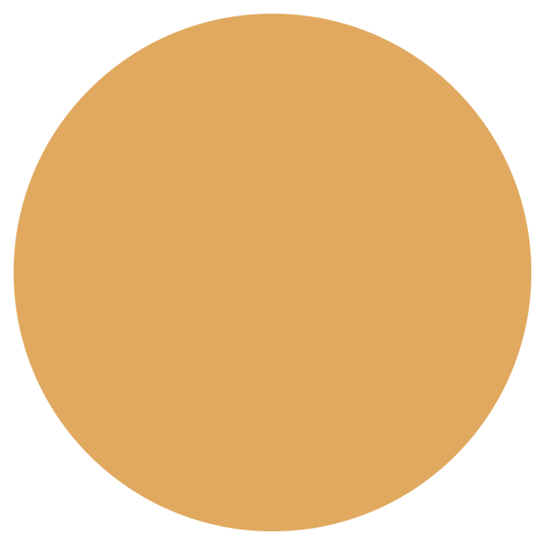
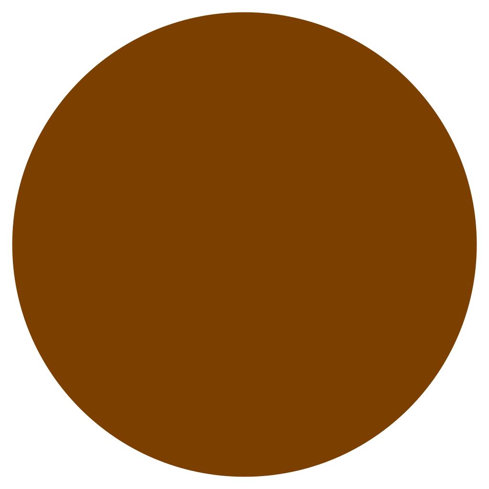

<div style="text-align:center">
  <table>
    <tr (click)="choose($event);">
      <th id='t0'>0</th>
      <th id='t1'>1</th>
      <th id='t2'>2</th>
      <th id='t3'>3</th>
      <th id='t4'>4</th>
      <th id='t5'>5</th>
      <th id='t6'>6</th>
    </tr>
    <tr style="margin:0px; padding:0px;" *ngFor="let line of board.reverse()">
      <td *ngFor="let case of line">

        
        
        

      </td>
    </tr>
  </table>
  <button (click)="switchPlayerOne()">{{playerOneIsMyBot ? 'Robot' : 'Humain'}}</button>
  <button (click)="switchPlayerTwo()">{{playerTwoIsMyBot ? 'Robot' : 'Humain'}}</button>
